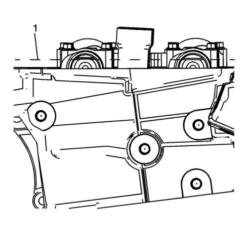
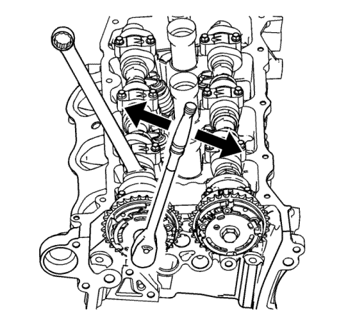
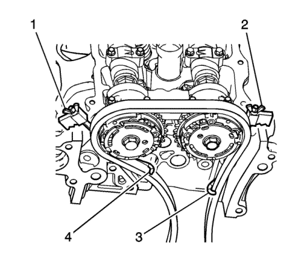
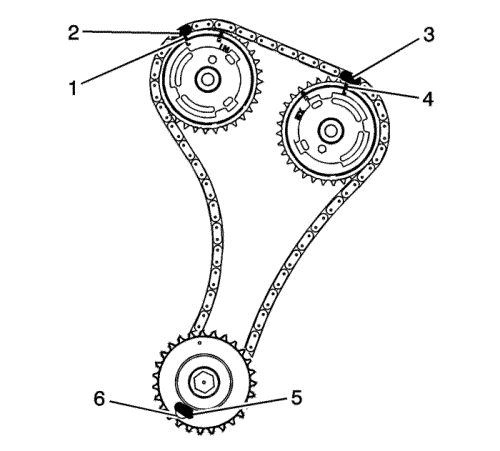

Sustitución del árbol de levas - Lateral izquierdo
Herramientas especiales
| • | EN-46108 Herramienta de retención de la cadena de distribución |
| • | EN-46111 Casquillo para girar el cigüeñal |
Si desea informarse sobre herramientas regionales equivalentes, consultar Herramientas especiales .
Procedimiento de desmontaje
- Desmonte el colector de admisión. Consultar Sustitución del colector de admisión .
- Desmonte la tapa del árbol de levas de la bancada izquierda. Consultar Sustitución de la tapa de los árboles de levas - lado izquierdo .
- Retire los sensores del árbol de levas. Consultar Sustitución del sensor de posición del árbol de levas - Banco 2 (lado izquierdo) escape y Sustitución del sensor de posición del árbol de levas - Banco 2 (lado izquierdo) admisión .
- Retire el actuador de posición del árbol de levas - solenoide. Consultar Sustitución del solenoide de la válvula magnética del actuador de posición del árbol de levas - Banco 2 (Lado izquierdo) Admisión .
- Desmonte el equilibrador del cigüeñal. Consultar Sustitución del dámper del cigüeñal .

- Gire el cigüeñal con la base EN-46111 hasta que los árboles de levas estén en una posición neutral (baja tensión). Las partes planas del árbol de levas estarán paralelas con el carril de la tapa del árbol de levas (1).
Precaución: Consulte Precaución, reacción del par contra la cadena de accionamiento de distribución en la sección Prólogo

Nota:
| • | Use una llave de tuercas en el tornillo hexagonal del árbol de levas para impedir la rotación del árbol de levas/motor. |
| • | NO desmonte el perno del actuador de posición del árbol de levas en este momento. |
- Afloje el perno del actuador de posición del árbol de levas.
Nota: Asegúrese de que las puntas de la herramienta EN-46108 estén totalmente engranadas en la cadena de distribución (3 y 4).

- Instale la herramienta EN-46108 (1 y 2) para sujetar la cadena de distribución.
Apriete con firmeza las tuercas de la herramienta EN-46108.

Nota: Asegúrese de que la cadena de distribución del árbol de levas y los actuadores de posición del árbol de levas están marcados para un montaje correcto.
- Marque la cadena de distribución y las ubicaciones respectivas en los actuadores de posición del árbol de levas (1-4).
- Retire el perno del actuador de posición del árbol de levas.
- Desmonte los árboles de levas. Consultar Desmontaje de los árboles de levas - lado izquierdo .
Procedimiento de montaje
Nota:
| • | Asegúrese de que las marcas en el actuador de posición del árbol de levas y la cadena de distribución (1-4) están alineados. |
| • | NO apriete el perno del actuador de posición del árbol de levas en este momento. |
- Localice los árboles de levas de la culata y monte los actuadores de árbol de levas a los árboles de levas.
- Monte los árboles de levas y los sombreretes de los cojinetes de los árboles de levas. Consultar Montaje de los árboles de levas - lado izquierdo .
- Desmonte la herramienta EN-46108.
Precaución: Consulte Precaución, reacción del par contra la cadena de accionamiento de distribución en la sección Prólogo
Nota: Use una llave de tuercas en el tornillo hexagonal del árbol de levas para impedir la rotación del árbol de levas/motor.
- Monte y apriete los actuadores de posición del árbol de levas. Consultar Montaje del actuador de posición del árbol de levas - Admisión, lado izquierdo y Montaje del actuador de posición del árbol de levas - Escape, lado izquierdo .
- Monte el solenoide del actuador de posición del árbol de levas de admisión. Consultar Sustitución del solenoide de la válvula magnética del actuador de posición del árbol de levas - Banco 2 (Lado izquierdo) Admisión .
- Monte los sensores del árbol de levas. Consultar Sustitución del sensor de posición del árbol de levas - Banco 2 (lado izquierdo) escape y Sustitución del sensor de posición del árbol de levas - Banco 2 (lado izquierdo) admisión .
- Montar el compensador del cigüeñal. Consultar Sustitución del dámper del cigüeñal .
- Monte la tapa del árbol de levas. Consultar Sustitución de la tapa de los árboles de levas - lado izquierdo .
- Monte el colector de admisión. Consultar Sustitución del colector de admisión .
| © Copyright Chevrolet Europe. All rights reserved |